Конкурси · журнал «ДентАрт» 2025 №2
Шлях у світ майстерності: роль професійних конкурсів з художньої реставрації у підготовці молодих стоматологів
THE WAY TO THE WORLD OF MASTERY: THE ROLE OF PROFESSIONAL CONTESTS IN DIRECT RESTORATION IN THE TRAINING OF YOUNG DENTISTS
Нині, у складних умовах повномасштабної війни, найважливішим завданням закладів післядипломної освіти є збереження мотивації і стимуляція молодих спеціалістів до професійного зростання та отримання в короткий термін навичок практичного прийому. Бо ж важливо, щоб лікарі-інтерни були якнайшвидше готові надавати кваліфіковану допомогу і лікувати пацієнтів у найскладніших умовах. Тому конкурси лікарської професійної майстерності необхідні, щоб підтримувати й підвищувати рівень стоматологічної допомоги.
Всеукраїнський конкурс «Шлях у світ майстерності», що відбувається понад 25 років на базі кафедри післядипломної освіти лікарів-стоматологів УМСА, нині ПДМУ, дозволяє привернути увагу аудиторії інтернів і фахівців до проблеми якості реставрацій, продемонструвати найсучасніші методи лікування.
Професійна підготовка молодих лікарів-стоматологів сьогодні неможлива без впровадження активних форм практичного навчання та професійних змагань, які дозволяють не лише закріпити теоретичні знання, а й сформувати клінічне мислення, відточити мануальні навички та розвинути естетичний підхід до лікування. Однією з ефективних освітніх ініціатив, що поєднує практичну підготовку з елементами змагання, є конкурс серед інтернів-стоматологів під назвою «Шлях у світ майстерності».
Цей захід започатковано з метою стимулювання професійного зростання молодих лікарів, підтримки клінічної ініціативи та формування високих естетичних стандартів у реставраційній стоматології. Основним завданням конкурсу є виконання реставрації фронтальної групи зубів у реального пацієнта з урахуванням функціональних, анатомічних та естетичних вимог. Особлива увага приділяється точному підбору кольору, моделюванню анатомічно правильних форм зубів, симетрії, прозорості, якості полірування та природному переходу реставрації у тканини зуба.
Оцінювання конкурсних робіт здійснюється професійним журі, до складу якого входять досвідчені лікарі-стоматологи, викладачі клінічних кафедр та представники провідних стоматологічних установ. Критерії оцінювання чітко визначені і стандартизовані: гармонійність кольору, відповідність форми анатомічним особливостям зубного ряду, правильність розташування контактних пунктів, відсутність нависаючих країв, якість крайового прилягання та загальний естетичний вигляд реставрації. Такий підхід дозволяє досягти об'єктивності у визначенні переможців і сприяє формуванню клінічної самокритичності в учасників.
Конкурс «Шлях у світ майстерності» — важливий етап професійної соціалізації інтернів. Він дає змогу проявити індивідуальність, отримати конструктивний зворотний зв'язок від експертів, а також закладає підґрунтя для формування клінічної відповідальності та етичного ставлення до пацієнта. Молоді лікарі, які беруть участь у конкурсі, отримують унікальний досвід реальної клінічної роботи під наглядом менторів, що є цінним доповненням до навчального процесу.
У сучасних умовах, коли стоматологія швидко розвивається як технологічно, так і естетично, вміння поєднувати функціональність і красу стає ключовою компетенцією лікаря. Саме тому конкурси подібного формату не лише підвищують рівень професійної підготовки, а й формують нову генерацію стоматологів, які готові працювати на рівні міжнародних стандартів. Результати конкурсу свідчать про високу мотивацію молодих лікарів та їх прагнення до постійного вдосконалення.

Методика проведення конкурсу та оцінювання робіт
Конкурс «Шлях у світ майстерності» традиційно проходить у кілька етапів, кожен з яких ретельно структурований і відповідає клінічним стандартам. До участі допускаються лікарі-інтерни за спеціальністю «Стоматологія», які мають базову клінічну підготовку, володіють мануальними навичками реставраційного втручання та демонструють інтерес до естетичної стоматології.
Учасникам пропонується зробити пряму реставрацію одного або кількох фронтальних зубів у пацієнтів із клінічними показаннями до втручання (після курації викладачем або клінічним ментором). Матеріали, інструменти та композитні системи є загальностандартизованими для всіх конкурсантів, що гарантує рівні умови. Кожна процедура фіксується фотографічно: до втручання, на етапах реставрації та після втручання.
Оцінює роботи незалежне журі у складі експертів із різних напрямків стоматології — терапевтичної, реставраційної, дитячої та естетичної. Для забезпечення об'єктивності використовується бальна система із чітко сформульованими критеріями, серед яких:
- Підбір кольору: точність у відтворенні відтінку емалі та дентину, природність кольорового переходу.
- Форма та анатомія: правильність відтворення вестибулярної, апроксимальної та ріжучої поверхонь.
- Контактні пункти: відсутність відкритих або надмірно тісних контактів.
- Наявність або відсутність нависаючих країв: якість крайового прилягання, плавність переходу реставрації в тканини зуба.
- Полірування та текстура поверхні: природний блиск, відповідність рельєфу.
- Естетика загалом: гармонія реставрації у зубному ряду, відповідність мімічному профілю.
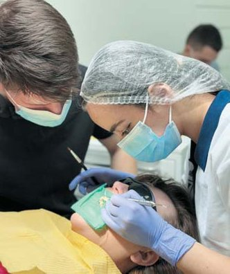
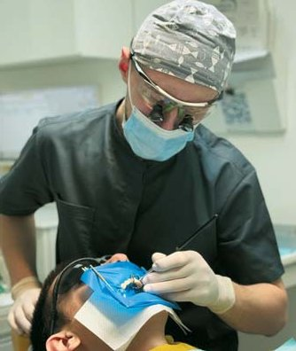
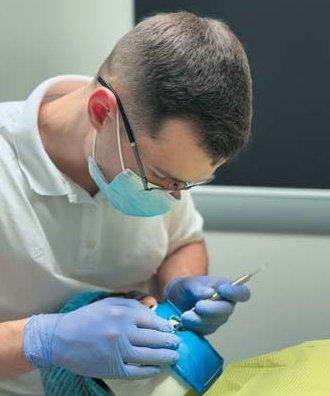
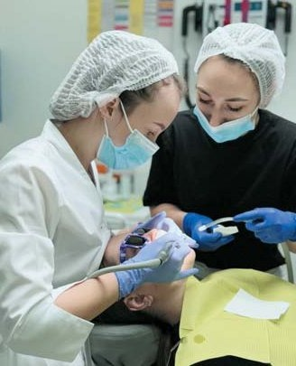
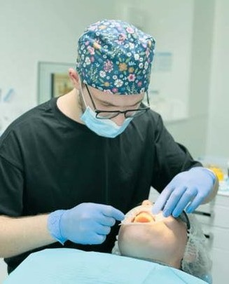
Максимальна кількість балів, яку міг набрати учасник, становила 100. Журі також враховувало загальне враження, а в окремих випадках — презентаційні навички конкурсанта при створенні презентації та поясненні клінічного випадку.
Уже четвертий рік поспіль перший тур конкурсу проводиться в онлайн-форматі. Цьогоріч у ньому взяли участь 10 лікарів-інтернів із шести міст України. Одноголосно члени журі 26-го Всеукраїнського навчального семінару «Шлях у світ майстерності», що відбувся 7 лютого 2025 року, переможцем першого онлайн-туру обрали Микиту Кайдалова, м. Івано-Франківськ, ІФНМУ, який, на жаль, не зміг бути присутнім на очному турі конкурсу, але отримав відзнаку.
Очна частина конкурсу, підбиття підсумків та нагородження переможців відбулися 16 лютого 2025 року. Переможцями конкурсу стали:
- 1 місце — Ярослав Волинець, м. Полтава, ПДМУ
- 2 місце розділили Дар'я Безрук, м. Покровськ, ПДМУ, і Вадим Плетньов, м. Полтава, ПДМУ
- 3 місце посіли Андрій Іваник, м. Кропивницький, ПДМУ, та Маргарита Ісмаілова, м. Харків, ХНУ імені В. Н. Каразіна.
Учасники конкурсу, а також асистуючі члени команд отримали дипломи та цінні подарунки від спонсорів: сертифікати на придбання бінокулярів і стоматологічної продукції MEDERGO, стоматологічний інструментарій від компанії Meddins, інструменти ENDOPEN, цінні подарунки від компанії MDS, новинки для догляду за зубами від компанії GUM, стоматологічні матеріали від Dentsply Sirona, книги від Асоціації стоматологів Полтавщини, клініки «Професорська стоматологія», журнали «ДентАрт» від Навчального центру «Аполлонія».
На сайті кафедри післядипломної освіти лікарів-стоматологів www.dentaero.com 16 лютого були висвітлені етапи конкурсу, і протягом доби відбулося інтернет-голосування за кращу роботу, в якому приз глядацьких симпатій отримав Андрій Іваник (м. Кропивницький).
Аналіз результатів і спостереження
Роботи відзначалися високим рівнем естетичного виконання, креативністю у моделюванні форми та впевненістю в роботі з кольором. За підсумками оцінювання, середній бал становив 83,5 ± 7,8, що свідчить про високий рівень клінічної підготовки.
Найбільшою складністю для учасників, за спостереженнями журі, стала побудова контактних поверхонь передніх зубів. Також викликали труднощі такі моменти, як досягнення симетрії та контроль над блиском у зоні світлового рефлексу.
Найвищі оцінки отримали ті учасники, які демонстрували клінічне мислення, вміння адаптувати техніку до анатомії конкретного пацієнта і мали хорошу фотографічну документацію, що дозволила оцінити деталі на високому рівні.
Лікар Ярослав Волинець (м. Полтава)
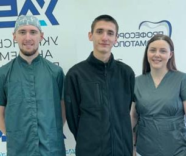
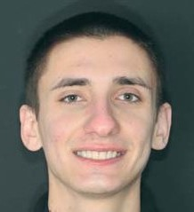
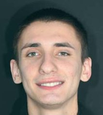
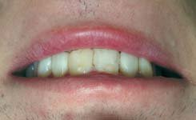
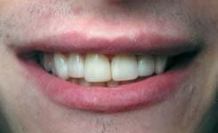
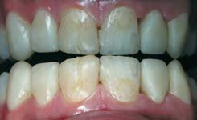
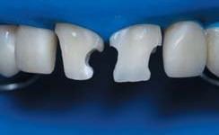
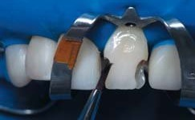
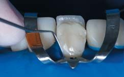
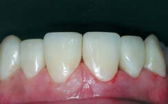
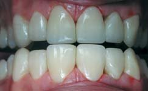
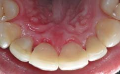
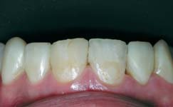
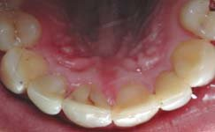
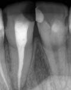
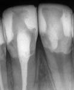
Роль професійних конкурсів у формуванні майстерності молодих лікарів-стоматологів
У сучасній стоматологічній освіті дедалі більшого значення набувають активні, змагальні, творчі форми професійної підготовки. Серед них особливе місце посідають професійні конкурси з художньої реставрації зубів, на яких оцінюють не лише технічну майстерність, а й клінічне мислення, естетичне бачення та етичну відповідальність молодих фахівців. Подібні змагання стають своєрідним мостом між освітнім середовищем та реальними клінічними викликами. Основна мета таких конкурсів — стимулювати практичну діяльність, удосконалювати мануальні навички та навчити лікаря мислити, як художник, зважаючи не лише на функціональність, а й на гармонію, природність та індивідуальність кожної реставрації. Участь у конкурсах дозволяє молодим лікарям навчитися оцінювати свою роботу критично, за об'єктивними критеріями, що є основою для професійного зростання.
Під час підготовки до змагань інтерни зазвичай поглиблюють свої знання з морфології зубів, кольорознавства, фотопротоколів, роботи з матричними системами, шарування композиту тощо. Це сприяє значному професійному прогресу в короткі строки, а також формуванню навичок самостійного прийняття клінічних рішень.
Лікар Андрій Іваник (м. Кропивницький)
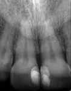
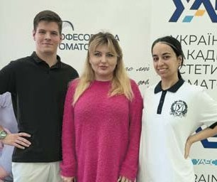
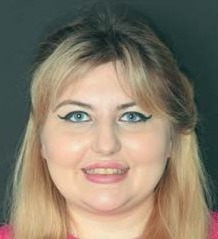
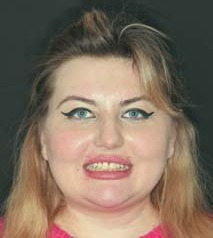
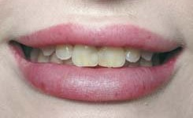
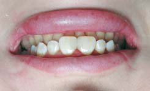
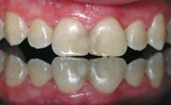
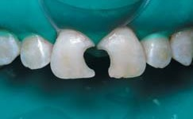
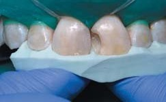
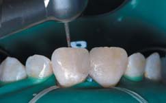
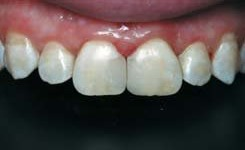
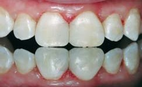
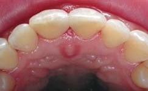
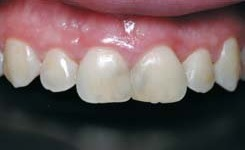
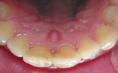
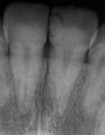
Лікар Маргарита Ісмаілова (м. Харків)
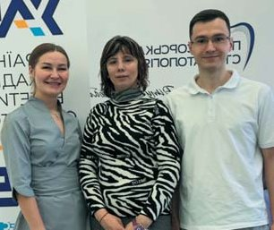
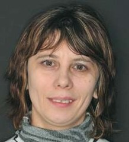
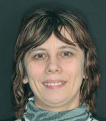
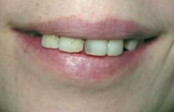
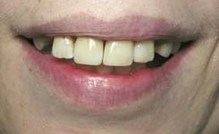
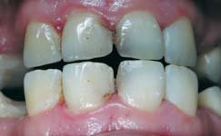
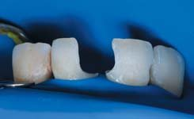
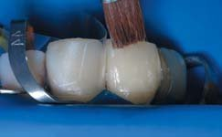
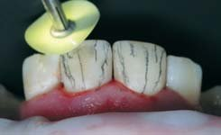
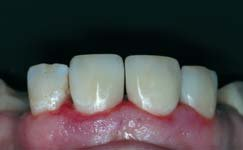
Лікар Дар'я Безрук (м. Покровськ)
Лікар Вадим Плетньов (м. Полтава)
Конкурси також виступають мотиваційним чинником, що підвищує інтерес до спеціальності, сприяє формуванню здорової професійної конкуренції та розширює коло професійних контактів. Часто саме під час таких змагань молоді лікарі відкривають у собі потенціал до викладацької діяльності, участі в наукових дослідженнях або поглибленої спеціалізації в естетичній стоматології.
Змагальний формат формує в учасників такі важливі компетенції, як стресостійкість, відповідальність за клінічний результат, уважність до дрібниць, вміння презентувати свою роботу експертам і аргументовано відстоювати свої клінічні рішення.
Багато переможців і фіналістів професійних конкурсів з реставрації надалі стають лідерами думок, викладачами, клініцистами у провідних приватних клініках, а також презентують свої роботи на міжнародних платформах. Участь у таких заходах — це не лише перевірка навичок, а й інвестиція в репутацію та довготривалий професійний розвиток.
Таким чином, професійні конкурси з художньої реставрації є надзвичайно важливим елементом у формуванні сучасного стоматолога — компетентного, відповідального, естетично орієнтованого та відкритого до вдосконалення.
Висновки
Участь у професійних конкурсах з реставрації має значний вплив на становлення майбутнього фахівця. Такі заходи стимулюють практичну діяльність, удосконалюють мануальні навички та розвивають клінічне й естетичне мислення. Молоді лікарі мають змогу наочно побачити свій рівень підготовки, отримати професійну критику та порівняти власну роботу з роботами колег.
Конкурси виступають також як мотиваційний чинник, що підвищує інтерес до спеціальності і сприяє формуванню здорової професійної конкуренції. Часто саме під час таких змагань молоді стоматологи визначають свої сильні сторони та вибудовують подальшу траєкторію професійного розвитку — від вдосконалення клінічної практики до наукової чи викладацької діяльності.
Участь у подібних конкурсах формує в інтернів відповідальність, етику взаємодії з пацієнтом, навички презентації клінічного випадку, а також готовність до роботи в умовах високих стандартів. Багато переможців і фіналістів змагань надалі стають лідерами думок у професійній спільноті, викладачами чи лекторами, що підтверджує важливість таких заходів як для особистого, так і для загального професійного розвитку галузі.
Література
- Скрипніков П. М., Скрипнікова Т. П., Хміль Т. А., Лазарєва К. А., Бережна О. Е. Експертиза якості прямих реставрацій передніх зубів в рамках конкурсу лікарів-інтернів // Проблеми безперервної медичної освіти та науки. — 2021. — № 1.
- Лазарева К. А. Биомиметическая техника реставрации передних зубов с материалом CeramX One SphereTEC // ДентАрт. — 2018. — № 2. — С. 52–58.
- Радлинский C. B. Виды прямой реставрации зубов // ДентАрт. — 2004. — № 1. — С. 33–40.
- Скрипніков П. М., Скрипнікова Т. П., Лазарєва К. А., Бережна О. Е., Хміль Т. А. XXIV Всеукраїнський професійний конкурс лікарів-стоматологів «Шлях у світ майстерності» завершився: вітаємо переможців! // ДентАрт. — 2023. — № 1. — С. 38.
- Гончарук Т. О., Смоляр Н. І. Особливості формування клінічних навичок у студентів стоматологічного факультету // Світ медицини та біології. — 2021;17(3):120–123.
- Лемішко І. М., Савченко І. А. Оцінка рівня підготовки інтернів-стоматологів до естетичної реставрації фронтальної групи зубів // Актуальні питання стоматології. — 2020;2(38):54–58.
- Чучман М. С., Гладун Г. М. Комплексна оцінка якості естетичних реставрацій у молодих лікарів // Український стоматологічний альманах. — 2022;1:65–69.